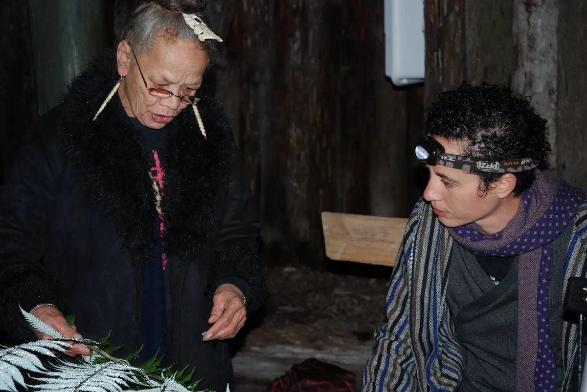

Archive / APARN Conference
Rebordering the Archipelago: Asia Pacific Exchanges
Held 3–6 November 2020 / Online
Four days of conversations about borders, oceans and solidarity across the region, after Édouard Glissant’s line “The entire world is becoming an archipelago.” Speakers included Raqs Media Collective, Léuli Eshrāghi, Yuki Kihara, Natalie King, Nuraini Juliastuti, Sutanto Mendut, Helly Minarti and Mark Teh.
- Label
- APARN2020
- Host
- Centre of Visual Art (CoVA), University of Melbourne, with APARN. Supported by the Melbourne-Indonesia Research Partnership Program.
- Format
- Online panels and conversations over four days, with times in Melbourne and Yogyakarta
- Practice
- Archipelagos and decolonial exchange
- Note
- Presented by the Centre of Visual Art, University of Melbourne
Highlights
- An open APARN network meeting on 6 November, convened by Danny Butt and Kurniawan Adi Saputro
- A First Peoples Research Forum convened by Dr Léuli Eshrāghi (Sāmoa)
- A linked postgraduate symposium, Archipelagic Encounters, between LASALLE College of the Arts (Singapore) and the University of Melbourne
- Opening remarks by Professor Gunalan Nadarajan, then Dean of the Stamps School
- The talks later became the book Rebordering the Archipelago (Perimeter Editions)
Event organisers
- Danny ButtConvenor, APARN meeting
- Kurniawan Adi SaputroConvenor, APARN meeting
- Léuli EshrāghiConvenor, First Peoples Research Forum
Listed for this edition. The network’s convenors are on the About page.



Programme
- Tue 3 NovRaqs Media Collective with Moonis Ahmad, introduced by Dr David Sequeira
- Wed 4 NovFluid States: Artistic Research in the Great Ocean Basin/Oceania, with Dr Léuli Eshrāghi, Lisa Hilli and Victoria Hunt
- Wed 4 NovYuki Kihara in conversation with Professor Natalie King
- Wed 4 NovDr Nuraini Juliastuti and Sutanto Mendut
- Thu 5 NovCoVA/LASALLE postgraduate symposium, Archipelagic Exchanges, with keynotes by Sopheap Pich and Prof. Claire Bishop
- Fri 6 NovOut of the Islands: Four Tangents, convened by Dr Helly Minarti with Tamarra, Ginoe Ojoy, Mark Teh and Iriano Yedija Petrus Awom
- Fri 6 NovAPARN network meeting and First Peoples Research Forum
Read the original call (archived, now closed)
The efforts of oppressed peoples to survive in settler-colonial and postcolonial nations build on regional alliances that precede and exceed the colonial imaginary. … APARN 2020 presents a range of panels and presentations as part of a regional exchange of artistic enquiry that can activate regional solidarity in our fields.
Find the work
Sources: #APARN2020 (Rebordering the Archipelago); APARN newsletter, January 2026 (SAR announcement service)